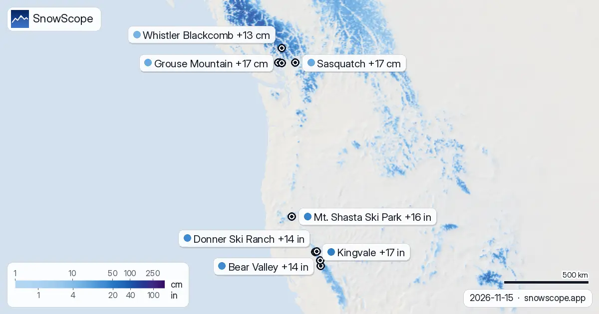

Courmayeur هي الأولى في أوروبا بـ 88 سم متوقعة بحلول الأربعاء
هاد الأحد، 15 نونبر 2026، النموذج ديالنا ديال التلج كيتوقع أن Courmayeur في جبال الألب الإيطالية غاتستقبل أكبر كمية ديال التلج الجديد في أوروبا على مدى 72 ساعة الجاية، بتقدير 88 سم. بالنسبة لأمريكا الشمالية، Kingvale في الغرب الأمريكي من المتوقع تشوف أكبر كمية ديال التلج الجديد، بـ 44 سم على نفس الفترة.
شوف توقعات التلج مباشرة ديال Courmayeur فالتطبيق ديال SnowScopeالعلو ديال التلج، التنبيهات والخريطة 3D، فابور.
جبال الألب الأوروبية: Courmayeur و Les Grands Montets في الصدارة
في جبال الألب الأوروبية، Courmayeur في إيطاليا غاتستقبل أكبر كمية ديال التلج الجديد بحلول الأربعاء 18 نونبر، بـ 88 سم متوقعة في الجهة الفوقانية ديالها. هادي كمية كبيرة لمنتصف نونبر. وراها مباشرة، Les Grands Montets في فرنسا من المتوقع ليها 79 سم ديال التلج الجديد.
منتجعات أخرى في جبال الألب الفرنسية والإيطالية حتى هي كتتوقع تساقطات تلجية مزيانة. La Thuile ski، على الحدود بين فرنسا وإيطاليا، ممكن تشوف 78 سم، بينما Les Arcs و Orelle في فرنسا بجوج من المتوقع ليهم 77 سم. Glacier 3000 في سويسرا حتى هي في القائمة بـ 73 سم متوقعة.
| # | المحطة | المنطقة | +24 س | +72 س | الحد ديال التلج |
|---|---|---|---|---|---|
| 1 | Courmayeur | جبال الألب · إيطاليا | 10 سم | 88 سم | 2500 م |
| 2 | Les Grands Montets | جبال الألب · فرنسا | 11 سم | 79 سم | 2100 م |
| 3 | La Thuile ski | جبال الألب · فرنسا / إيطاليا | 9 سم | 78 سم | 2200 م |
| 4 | Les Arcs | جبال الألب · فرنسا | 9 سم | 77 سم | 2100 م |
| 5 | Orelle | جبال الألب · فرنسا | 8 سم | 77 سم | 2500 م |
| 6 | Glacier 3000 | جبال الألب · سويسرا | 13 سم | 73 سم | 2400 م |
| 7 | Vichères-Bavon | جبال الألب · سويسرا | 9 سم | 73 سم | 2400 م |
| 8 | Sainte-Foy Tarentaise | جبال الألب · فرنسا | 7 سم | 71 سم | 2000 م |
| # | المحطة | المنطقة | +24 س | +72 س | الحد ديال التلج |
|---|---|---|---|---|---|
| 1 | Kingvale | غرب ميريكان · ميريكان | 10 إنش (25 سم) | 17 إنش (44 سم) | – |
| 2 | Mt. Shasta Ski Park | غرب ميريكان · ميريكان | 2 إنش (4 سم) | 16 إنش (40 سم) | 4300 قدم (1300 م) |
| 3 | Bear Valley | غرب ميريكان · ميريكان | 7 إنش (19 سم) | 14 إنش (36 سم) | 5200 قدم (1600 م) |
| 4 | Donner Ski Ranch | غرب ميريكان · ميريكان | 7 إنش (19 سم) | 14 إنش (36 سم) | 5200 قدم (1600 م) |
| 5 | Sierra-at-Tahoe | غرب ميريكان · ميريكان | 7 إنش (18 سم) | 14 إنش (35 سم) | 5600 قدم (1700 م) |
| 6 | Kirkwood | غرب ميريكان · ميريكان | 6 إنش (16 سم) | 13 إنش (34 سم) | 5600 قدم (1700 م) |
| 7 | Palisades Tahoe Alpine Meadows | غرب ميريكان · ميريكان | 7 إنش (17 سم) | 13 إنش (32 سم) | 5200 قدم (1600 م) |
| 8 | Homewood | غرب ميريكان · ميريكان | 6 إنش (16 سم) | 12 إنش (30 سم) | – |
| # | المحطة | المنطقة | +24 س | +72 س | الحد ديال التلج |
|---|---|---|---|---|---|
| 1 | Sasquatch | غرب كندا · كندا | 17 سم | 17 سم | 900 م |
| 2 | Grouse Mountain | غرب كندا · كندا | 16 سم | 17 سم | 900 م |
| 3 | Cypress Mountain | غرب كندا · كندا | 13 سم | 14 سم | 900 م |
| 4 | Whistler Blackcomb | غرب كندا · كندا | 13 سم | 13 سم | 900 م |
| 5 | Mt Seymour | غرب كندا · كندا | 12 سم | 13 سم | 900 م |
| 6 | Banff Sunshine Village | غرب كندا · كندا | 9 سم | 12 سم | 1300 م |
| 7 | Ski Callaghan | غرب كندا · كندا | 11 سم | 11 سم | 700 م |
| 8 | Mount Washington Alpine Resort | غرب كندا · كندا | 10 سم | 11 سم | 800 م |

الغرب الأمريكي: Kingvale في الصدارة بـ 44 سم
في الغرب الأمريكي، Kingvale من المتوقع ليها تستقبل أكبر كمية ديال التلج الجديد على مدى 72 ساعة الجاية، بـ 44 سم (17 in) متوقعة. Mt. Shasta Ski Park حتى هي كتبان ليها كمية مزيانة، بـ 40 سم (16 in) بحلول الأربعاء. Bear Valley و Donner Ski Ranch بجوج من المتوقع ليهم 36 سم (14 in).
خط التلج في الغرب الأمريكي غايختلف، مع Mt. Shasta Ski Park اللي غاتشوف التلج حتى لـ 1300 م (4265 ft) ومنتجعات أخرى بحال Bear Valley و Donner Ski Ranch اللي كتتوقع التلج حتى لـ 1600 م (5249 ft).
غرب كندا: Sasquatch و Grouse Mountain
غرب كندا حتى هو غايشوف تلج جديد، واخا بكميات أقل مقارنة بأوروبا والغرب الأمريكي. Sasquatch و Grouse Mountain بجوج من المتوقع ليهم يستقبلو 17 سم ديال التلج الجديد بحلول الأربعاء. Cypress Mountain و Whistler Blackcomb من المتوقع ليهم 14 سم و 13 سم على التوالي.
خط التلج في غرب كندا غايكون منخفض نسبياً، حوالي 900 م للعديد من المنتجعات، مما يعني أن التلج ممكن ينزل في ارتفاعات أقل.
تفاصيل التوقعات لـ 24 ساعة الجاية
بالنظر فقط لـ 24 ساعة الجاية حتى الاثنين 16 نونبر، Glacier 3000 في سويسرا من المتوقع ليها تستقبل أكبر كمية ديال التلج الجديد في أوروبا، بـ 13 سم. في الغرب الأمريكي، Kingvale في الصدارة بـ 25 سم (10 in) متوقعة. Sasquatch في كندا من المتوقع ليها تستقبل 17 سم. هادو هما التقديرات ديال النموذج ديالنا للجهة الفوقانية.
نصايح للي كيتزلجو
- بالنسبة لأعمق تلج جديد في أوروبا، ركزو على الجهة الفوقانية ديال Courmayeur و Les Grands Montets، فين من المتوقع تساقطات تلجية مهمة بحلول الأربعاء.
- في الغرب الأمريكي، Kingvale و Mt. Shasta Ski Park اختيارات مزيانة للتلج الطري، خصوصاً في الارتفاعات العالية فين غايتجمع التلج فوق خط التلج المتوقع.
- ردوا البال أن التلج ديال بداية الموسم ممكن يكون رقيق، والحجر ممكن يكون مخبي تحت التلج الطري. ديما تأكدو من الظروف المحلية والمعلومات ديال المحطة.
- إذا كنتو ناويين تخرجو على البيست، ديما استشيرو النشرة الرسمية ديال الانهيارات للمنطقة.
- لأحدث علو ديال التلج والتوقعات، شوفو تطبيق SnowScope.
على هاد الأرقام
العلو ديال التلج فالمحطات هو أكثر تلج فالجهة الفوقانية حسب الموديل ديال التلج ديال SnowScope (تقريبا 1 كم، الحساب ديال 15 نونبر)؛ هادو تقديرات لمنطقة، ماشي قياس فنقطة وحدة. الأرقام ديال محطات القياس مقاسة فالتاريخ المكتوب. التوقعات يمكن تتبدل. ديما شوف النشرة الرسمية ديال الانهيارات قبل ما تخرج من البيست.
النشرات الرسمية ديال الانهيارات: EAWS (Europe) · avalanche.org (US) · Avalanche Canada
كيفاش تستاشهد بهاد المقال
للبحث، التعليم ولا الصحافة: الأرقام والرسومات تقدر تعاود تخدم بيهم بحرية تحت CC BY 4.0 مع هاد الاستشهاد.
SnowScope (2026), Courmayeur هي الأولى في أوروبا بـ 88 سم متوقعة بحلول الأربعاء, https://snowscope.app/blog/ar/2026/11/where-most-snow-falls-next-72-hours-15-november-2026.html, تشاف ف 2026-11-15
SnowScope (Atlas Labs). (2026, November 15). Courmayeur هي الأولى في أوروبا بـ 88 سم متوقعة بحلول الأربعاء. SnowScope snow reports. https://snowscope.app/blog/ar/2026/11/where-most-snow-falls-next-72-hours-15-november-2026.html
BibTeX
@misc{snowscope2026wheremostsnowfallsnext72,
author = {{SnowScope (Atlas Labs)}},
title = {Courmayeur هي الأولى في أوروبا بـ 88 سم متوقعة بحلول الأربعاء},
year = {2026},
month = nov,
howpublished = {\url{https://snowscope.app/blog/ar/2026/11/where-most-snow-falls-next-72-hours-15-november-2026.html}},
note = {Published 2026-11-15 16:33 UTC; accessed 2026-11-15}
}· CC BY 4.0 · الطريقة، الداتا والأدوات →
Courmayeur: التلج والحرارة حسب العلو، هاد الشتا مقارنة مع اللي فاتت (الأدوات) →
تابع Courmayeur
فابور: ميساج ملي يجي التلج، والتوقعات كل صباح.
تقارير أخرى ديال التلج

الموديل ديال التلج ديالنا كيتوقع بلي Whistler Blackcomb غاتستقبل 88 سم ديال التلج الجديد حتى لتنين 16 نونبر 2026، وغاتكون هي الرائدة عالميا.

الترتيب اليومي: أكثر تلج جديد متوقع ف 24 ساعة الجاية وحتى ل 20 نونبر، فأوروبا والمغرب وأمريكا الشمالية، والحد ديال التلج معاه. الجدول كيرتب التوقعات، …

المساحة اللي فيها التلج: 49467 ميل² (128120 كم²) نهار 11 نونبر، 49050 ميل² (127040 كم²) اليوم، 64429 ميل² (166870 كم²) متوقعة نهار 16 نونبر. هادا هو …